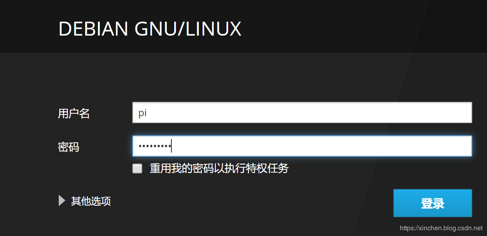

原文出处:本文由博客园博主zq2599提供。
原文连接:https://www.cnblogs.com/bolingcavalry/p/11480661.html
原文连接:https://www.cnblogs.com/bolingcavalry/p/11480661.html
入手了树莓派4B，我对它的定位是作为一个Docker实验环境，平时用到的镜像多为Java服务端常用的技术、以及自己作的Java应用镜像，因此宿主机需要64位操作系统，而树莓派官方操作系统只有32位的，只能去网上找第三方的了。
前提条件
本次安装需要您提前准备以下内容：
- 树莓派4B；
- 可用于树莓派的SD卡；
- 读卡器；
- 内网网络，并且可以通过路由器管理页面看到每个设备的IP地址；
- 网线一根；
- Win10电脑一台，安装有SDFormatter V4.0、Win32 Disk Imager；
openfans的64位镜像下载
- 在GitHub上可以找到适配树莓派4B的64位操作系统镜像，地址是：https://github.com/openfans-community-offical/Debian-Pi-Aarch64
- 上述地址提供了多种镜像，如下所示，点击红框按钮进入资源下页面：
- 这里我打算使用基础 Aarch64(ARM64) 系统镜像(无桌面WebUI增强版)，打开百度盘的目录，如下所示，我选的是红框中的RC4，因为最新：
- 进入RC4目录后如下图，根据名字的大小推测，红框中的是我所需要的版本（服务器版，带有WEBUI）将此文件下载到本地，稍后会用到：
2.png)
- 上述文件我已经上传到CSDN，您可以在此下载：https://download.csdn.net/download/boling_cavalry/11693338
在CSDN下载需要5个CSDN积分，这不是我想要的，而是实在不知道在哪里可以设置免费下载，您要是知道麻烦留言告诉我，谢谢。
烧录到SD卡
- 准备好sd卡和读卡器，如下：
- 准备格式化SD卡的软件，我用的是SDFormatter V4.0，如下所示，选好SD卡的盘符（千万小心别搞错），再执行格式化，该卡的数据会全部被删除：
- 将镜像烧录到SD卡，我这里用的烧录软件是Win32 Disk Imager，如下图，选中刚才下载的镜像文件在点击"Write"按钮即可开始烧录：
- 烧录完成后，将卡插入树莓派，打开电源；
将网线插入树莓派的网口；
进入树莓派
- 电源接通后，等待大约5分钟左右，在路由器的管理页面查看树莓派的IP地址，我这里是华硕AC86U路由器，可以在其管理页面看到树莓派的IP地址是192.168.50.118，如下图：
- 在同一网络内的电脑上，用浏览器访问：https://192.168.50.118:9090 ，这是树莓派的管理页面，期间会有安全提示，点击下图红框中的链接继续：
- 来到登录页面，输入用户名pi，密码raspberry，即可登录成功：
 - 顺利进入树莓派的管理系统，如下图，内容不少，系统基本信都能看到了：
- 点击终端菜单，可以执行控制台命令，先看看是不是64位系统，如下图红框：
- 我最关心的是ssh服务是否启动，如下图，ssh服务正常运行中，这样就可以通过xshell等工具远程连接树莓派了：
- 左侧菜单中有个容器菜单引起了我的注意，莫非这个版本的树莓派已经内置了Docker？
12.png)
- 在GitHub的文档证实了Docker服务是内置的，并且有关于Docker的详细描述：
至此，在树莓派4B上安装64位Linux操作系统成功完成，希望您在装系统的时候此文能给您一些参考。